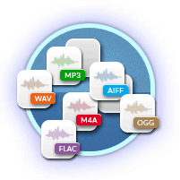
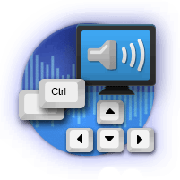

Hello everyone! It is with great pleasure that we share this news with you: Our download partner, FossHub, has published a wonderful blog post announcing that feat to the world. It makes us very proud to be their #1 downloaded…
Get It Now
For Windows, macOS and Linux
Latest version : 2.4.2
A Load of Features
Recording
Can record live audio through a microphone or mixer, or digitize recordings from other media.

Export / Import
Import, edit, and combine sound files. Export your recordings in many different file formats, including multiple files at once.
Sound Quality
Supports 16-bit, 24-bit and 32-bit. Sample rates and formats are converted using high-quality resampling and dithering.
Plugins
Support for LADSPA, LV2, Nyquist, VST and Audio Unit effect plug-ins. Nyquist effects can be easily modified in a text editor – or you can even write your own plug-in.
Editing
Easy editing with Cut, Copy, Paste and Delete. Also unlimited sequential Undo (and Redo) in the session to go back any number of steps.
Effects
Real-time preview of LADSPA, LV2, VST and Audio Unit (macOS) effects. Plug-in Manager handles plug-in installation and addition/removal of effects and generators from the menus.

Accessibility
Tracks and selections can be fully manipulated using the keyboard. Large range of keyboard shortcuts.